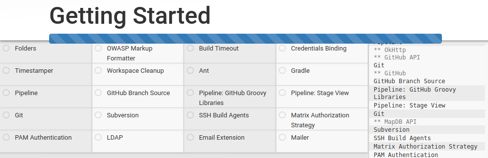
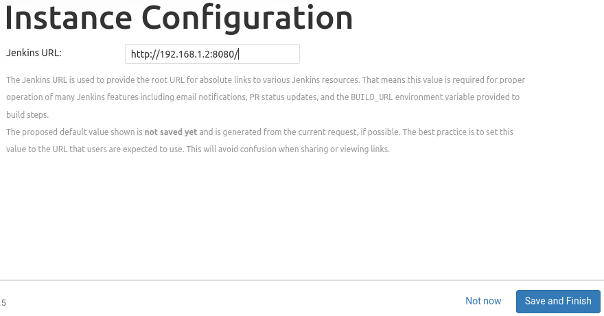
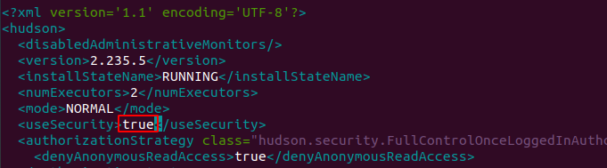
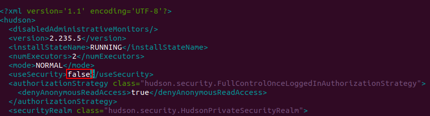

Jenkins Installation
Objective
This section aims to set up the required infrastructure of Jenkins to perform the task and solve the 2nd point of the problem statement under Task 1.
What is Jenkins?
Jenkins is a self-contained, open-source automation server that can be used to automate all sorts of tasks related to building, testing ,and delivering or deploying software.
Jenkins can be installed through native system packages, Docker, or even run standalone by any machine with a Java Runtime Environment (JRE) installed.
Prerequisite
-
VM should be installed with Ubuntu 18.04 server for Installing Jenkins go to Debian/Ubuntu section.
-
Java 8 to be installed, by this link specific versions of OpenJDK on Ubuntu 18.04. I decided to go with this documentation as it was concise.
Begin with the installation steps of Jenkins.
STEP 1 - Installing Jenkins
First, add the repository key to the system:
wget -q -O - https://pkg.jenkins.io/debian-stable/jenkins.io.key | sudo apt-key add -
The system will return OK
Next, append the Debian package repository address
sudo sh -c 'echo deb https://pkg.jenkins.io/debian-stable binary/ > \
/etc/apt/sources.list.d/jenkins.list'
sudo apt update
Finally, install Jenkins and its dependencies:
sudo apt install jenkins
Step 2 — Starting Jenkins
I started Jenkins using systemctl command because systemctl is used to examine and control the state of “systemd” system and service manager.:
sudo systemctl start jenkins
Since systemctl doesn’t display output,I am using its status command to verify that Jenkins started successfully:
sudo systemctl status jenkins
If it's successfully installed, the beginning of the output should show that the service is active and configured to start for boot.
Jenkins is running now. To reach it from a web browser I will adjust the firewall rules to complete the initial setup.
Step 3 - Opening the Firewall
By default, Jenkins runs on port 8080, opening that port using ufw(Uncomplicated Firewall ):
sudo ufw allow 8080
To check the ufw's status confirm the new rules:
sudo ufw status
Note: If the status shows inactive. Then enable the firewall by following the following commands that will OpenSSH
sudo ufw allow OpenSSH
sudo ufw enable
Step 4 — Setting Up Jenkins
Find the IP of your system:
ifconfig
To complete setup, in the browser I entered http://your_server_ip_or_domain:8080
The Unlock Jenkins screen opens, which will display where the initial password would be stored.

In the terminal window I will use the cat command to display the password:
sudo cat /var/lib/jenkins/secrets/initialAdminPassword
The 32-character alphanumeric password is displayed in the terminal, paste it into the Administrator password field, then click Continue.
Installing suggested plugins

I clicked the Install suggested plugins option, which will immediately begin the installation process as shown:

Once the installation completes, the screen opens to Create First Admin User, I filled the required details.

Click on Save and Continue or select Continue as admin to skip the above step and continue as admin using the initial password used above.
The Instance Configuration page will be displayed which will ask to confirm the preferred URL for Jenkins instance.

Confirm the appropriate information, click Save and Finish. A confirmation page confirming that Jenkins is Ready!

Click Start using Jenkins to visit the main Jenkins dashboard.
Here finish the installation of Jenkins in VM.
Errors resolved
There were a few errors that I faced during the installation.
- GPG key error:
An LTS (Long-Term Support) release is chosen every 12 weeks from the stream of regular releases as the stable release for that period time.
The link gets updated, it gives GPG key error so find the latest link from here under the Debian/Ubuntu section.
- Certificate verification failed

To resolve this pass --no-check-certificate as shown below:
wget https://ftp.yz.yamagata-u.sc.jp/pub/misc/jenkins/debian-stable/jenkins_2.235_all.deb --no-check-certificate
Again reinstall the Debian file of Jenkins
sudo dpkg -i jenkins_2.235.5_all.deb
To fix the broken packages run:
sudo apt install -f
Now again I check the status of jenkins:
sudo service jenkins status
It SHOWS its active now.
- Invalid user or password

Once logged in successfully into Jenkins VM (Virtual Machine). Go to directory Jenkins and open file config.xml.
sudo nano /var/lib/Jenkins/config.xml
This command will open config.xml file as below:

Go to true.
You need to update false as below.

Save this file.
Once you are done with updating value in the config.xml file. Restart Jenkin's service.
sudo service jenkins restart
It will show the status active.
Now on opening Jenkins URL. It will go to the dashboard direct. No credentials are required. After opening the dashboard Logged in user section will be blank. As it is now Anonymous user.
To reset all security options, go to Jenkins -> Manage Jenkins option in left-hand side option lists.

Go to the Configure Global Security option
- Enable
Enable Securityoption. - In Security Realm Option Select
Jenkins own databaseoption. - Unselect
Allow users to sign upoption underJenkins own databaseoption.

In Authorization section do the following changes :
- Select
Logged-in users can do anythingoption (Tick). - Unselect
Allow anonymous read accessoption underLogged-in users can do anythingoption. - Click
Savebutton.
You will be redirected to Create First Admin User page once you click on Save button.

Once you fill all the details, click on Create First Admin User button
You will be ready with new Admin users to log in again into the Jenkins portal.